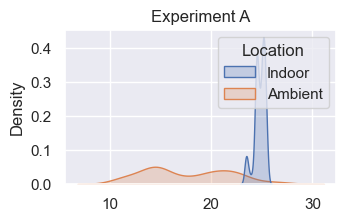
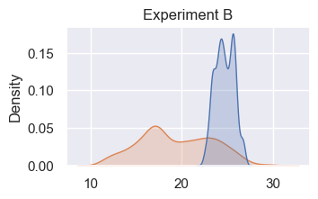
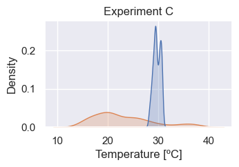
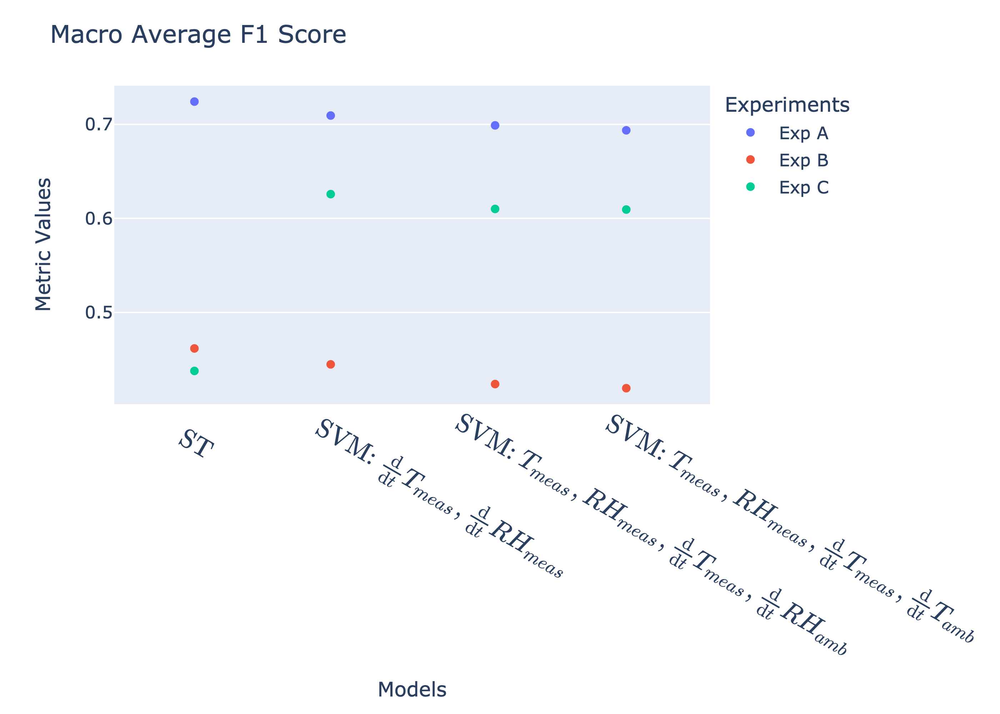
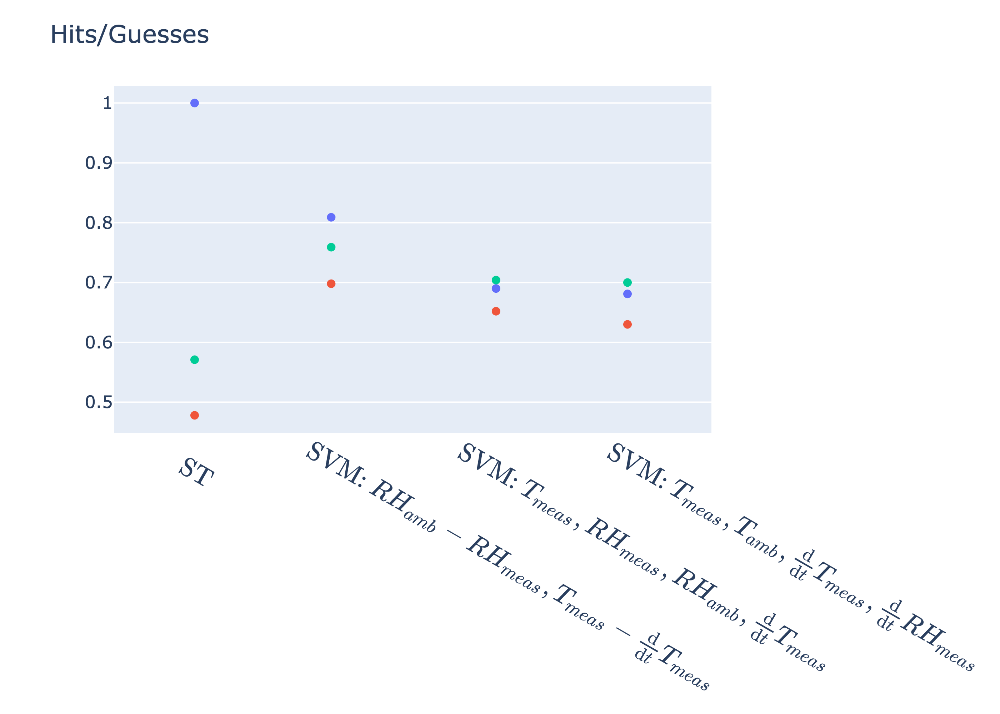
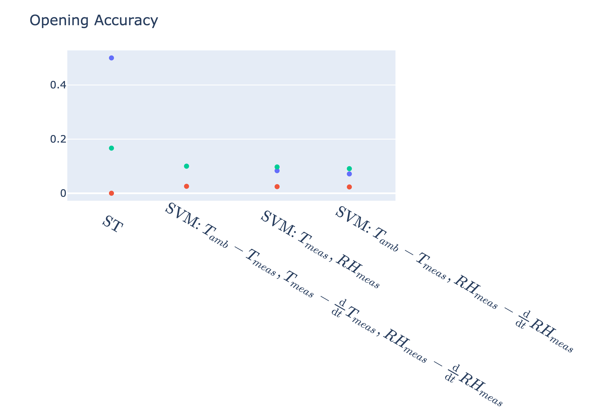
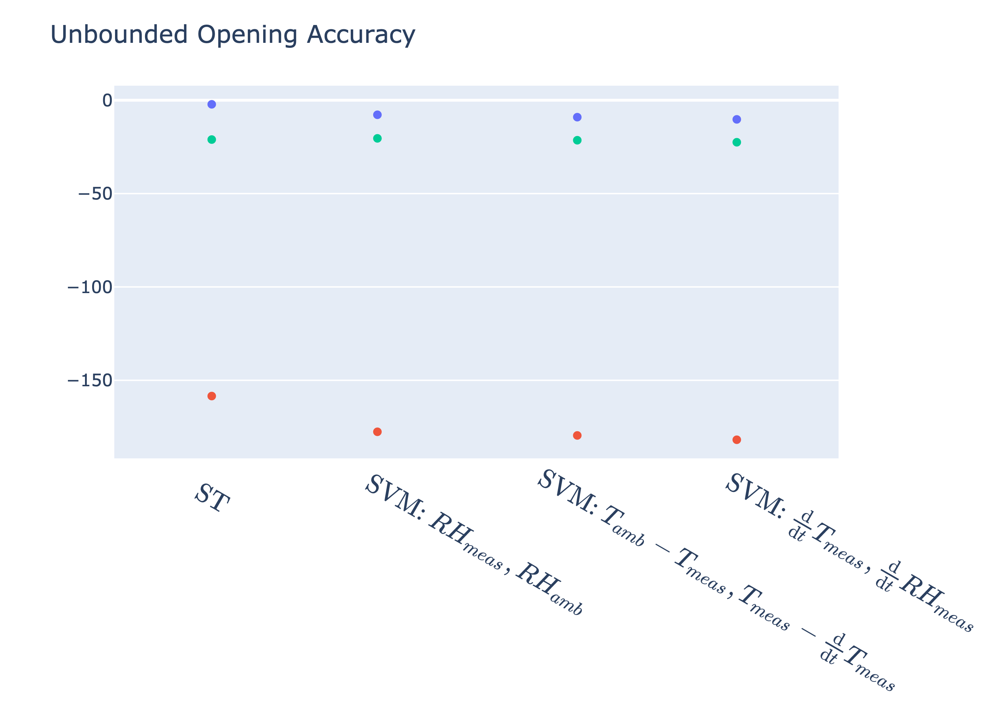
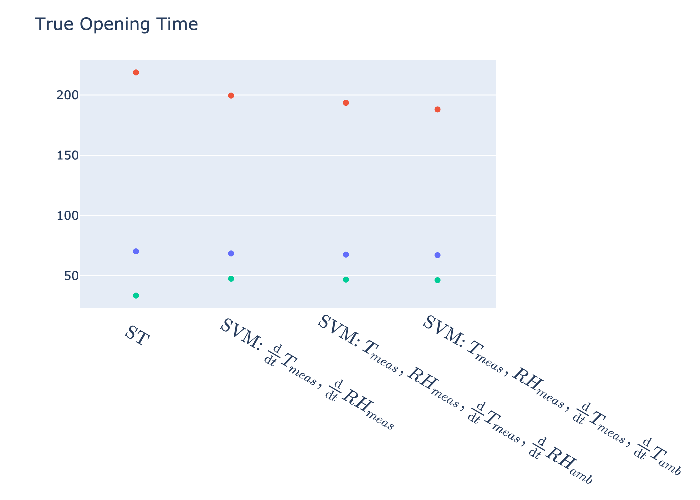

| A | B | C | |
|---|---|---|---|
| Starting Day | Jul 20 | Jul 27 | Sep 08 |
| Data Length | 4 days | 14 days | 3 days |
| Room | 1 | 0 | 0 |
| Opening Percentage | 41.3 | 5.2 | 22.1 |
Abstract
Natural cooling, utilizing non-mechanical cooling, presents a low-carbon and low-cost way to provide thermal comfort in residential buildings. However, designing naturally cooled buildings requires a clear understanding of how opening and closing windows affect occupants’ comfort. Predicting when and why occupants open windows is a challenging task, often relying on specialized sensors and building-specific training data. This limits the scalability of natural cooling solutions. Here, we propose a novel unsupervised method that utilizes easily deployable off-the-shelf temperature and humidity sensors to detect window operations. The effectiveness of our approach is evaluated using an empirical dataset and compared with a state-of-the-art support vector machine (SVM) model. The results demonstrate that our proposed method outperforms the SVM on key indicators, except when indoor and outdoor temperatures have small differences. Unlike the SVM’s sensitivity to time series characteristics, our proposed method relies solely on indoor temperature and exhibits robust performance in pilot studies, making it a promising candidate for developing a highly scalable and generalizable window operation detection model. This work demonstrates the potential of unsupervised data-driven methods for understanding window operations in residential buildings. By enabling more accurate modeling of naturally cooled buildings, our work aims to facilitate the widespread adoption of this low-cost and low-carbon technology.
Introduction
Literature Review
Several research studies have been performed to detect window opening/closing actions in the past. Environmental parameters such as indoor and outdoor temperature, relative humidity, wind speeds, solar radiation, etc. have been widely investigated, and numerous studies have found window operation to be affected primarily by these factors. Almost all of these studies have considered indoor and outdoor temperatures and deemed them to be significant. Data-driven machine learning models have been employed to predict these dynamic window actions taken by the users. These models predict the probability of either the window state (i.e. open or close) or a certain action being taken (opening or closing a window). Supervised ML models such as Logistic regression and Markov chain models, followed by artificial neural networks, have been heavily relied upon to study the probabilistic correlation between the window state and explanatory variables monitored. Other ML models such as support vector machines, and random forest classifiers have been explored in more recent studies to predict window-opening behavior based on both environmental and contextual features. However, these supervised models often rely on labeled long-term data collection, usually spanning over 6 months or multiple seasons. They suffer from a lack of generalizability as their results have to be specifically tuned for the context in which data was collected, either constrained by building type or climate. This makes them ineffective tools for scaling natural cooling to a large number of buildings.
Additionally, while environmental parameters, for eg, air temperature and relative humidity are commonly used, sensors to monitor window opening actions are relatively difficult to install and could be intrusive for building occupants. Therefore, we propose a novel unsupervised window opening and closing detection method that utilizes easy to deploy off-the-shelf temperature and humidity sensors.
As window operation detection is commonly a binary classification task in machine learning, several metrics have been used to assess the prediction performance of window status. These evaluation metrics, frequently referred to in literature are overall accuracy of the model, precision, recall, f-1 score, coefficient of determination (R^2), mean average error (MAE), and root mean square error (RMSE). R^2, MAE, and RMSE are typically used when the output of model is numeric such as the probability of the action being taken. Otherwise, the ability to correctly estimate the window state (open or close) is normally assessed by accuracy, precision, recall, and f-1 scores. Some domain specific metrics for evaluating the prediction performance of the window open/close classification task have also been proposed in previous studies in order to investigate the overall accuracy of the model as well as the consistency of true estimates for window states. These include ratio of total window opening time over total monitoring period, number of actions taken, and median opening/closing durations. Recently, de Rautlin et al. proposed domain oriented metrics to improve coherence of results such as number of true and false openings, total time of true and false openings, and average true opening accuracy score -> we will discuss in more detail further in the paper, as we will evaluate our model based on these metrics, in addition to, our developed custom metrics.
Methods
In this section, we descibe our data collection process, the two window detection algorithms we examined, and the metrics we used to evaluate these algorithms.
Data Collection
We collected data for short periods of time over three months in the summer. We placed HOBO® Temp-RH 2.5% Data Logger (UX100-011) (CITE) sensors in two adjacent rooms in a multi-family residential building, and measured indoor temperatures, \(T_{meas}(t)\) and relative humidity, \(RH_{meas}(t)\). In hopes of capturing the average room temperature, sensors were intentionaly positioned away from drafts that could come in through windows (CITE Huang). We also collected data on the ambient temperature, \(T_{amb}(t)\) and relative humidity \(RH_{amb}(t)\) from a local weather station (CITE). In one room, the window state, \(W(t)\), was held constant. In the adjacent room, window state was allowed to vary between open and closed.
Descriptions of the data in the rooms where the window state varied are provided in Table 1. The experiments are labeled as experiments A, B, and C, corresponding to data recorded at the beginning on July 20, July 27, and September 8 respectively. Experiment B was much longer than the other experiments, spanning 14 days. Data for experiments A and C were collected for less than 4 days. The window was open for 5 percent of time recorded time in experiment B, which is shorter than the the 20 percent or greater recorded for other experiments (FIX).
To develop an understanding of how the indoor and ambient quantities of interest changed across the different experiments, we examined the distributions of the data. The internal relative humidity was higher than the ambient relative humidity across experiments. The temperature distributions, which had distinctive fluctiations across experiments, are shown in Figure 1. We observe that experiment B had the widest distribution of indoor temperatures. Experiment C had internal temperatures that were higher and closer to the mean of the ambient temperatures. This can be attributed to higher ambient temperatures that were recorded during this time period, which makes for a particularly interesting edge case. (FIX: the difference in distributions is a bit hard to see with the narrow subplots, consider horizontal layout)



In summary, the three receorded datasets present various degrees of difficulty for a detection algorithm. Experiment A presents the most favorable case for window state detection, as it has a fairly even amount of opening and closed states, as well as distinct indoor and ambient measured temperatures and relative humidities. Although experiment B also has noteable distinctions in terms of temperature and relative humidity, the window states are extremely unbalanced. Experiment C has both unbalanced window states and little distincition between indoor and outdoor temperature.
Detection Methods
In the following section, we discuss the two methods that were used to detect window state changes. The first is a smoothing technique (ST) that we have developed, and the second is a machine learning method that has been studied in the literature (CITE).
New Method: Smoothing Technique
Our approach relies on an intuitive understanding of window operation detection. We expect a typical time series recording of a quantity of interest, in this case the measured indoor temperature, \(T_{meas}(t)\), to contain information that reflects the seasonality of ambient quantities, noise due to occurrences within the space where measurements are being taken, and the desired signal of changes in window state. The way in which these three components of a measurement are combined is unknown, and, the noise component in particular cannot be known based on the measurements we have collected. As we have recorded information about the ambient temperature, \(T_{amb}(t)\), we focus on removing the seasonality from \(T_{meas}(t)\), hypothesizing that this will reveal the window state signal and noise. An optimal technique will additinally isolate the window state signal from the unknown noise.
To remove the seasonality from the measured data, we examined three methods of de-seasonalizing: using sinusoidal fit, using an exponentially weighted mean function, and using a seasonal-trend-decomposition (CITE all), which consists of optimizing the parameters of a sine function to fit a specific time series, purely reflects seasonality. However, this does not nessecarily account for the seasonality that \(T_{meas}(t)\) experiences due to changes in outdoor temperature. The exponentially weighted mean function is simply a moving average of the indoor temperature signal – it captures some seasnality and some noise. The seasonal component of a seasonal trend decomposition represents a middle ground. In preliminary studies, we found that the exponentially weighted mean function performed the best in isolating window detection, which follows from our intuition that both the seasonal components and noise need to be isolated.
ST proceeds as follows. The goal is to identify \(W(t)\), window state as a function of time. This can take on two values: 0, representing window closed, or 1, representing window open. We have an observed variable \(T(t) = T_{meas}(t)\), which represents the measurement of the indoor temperature. We apply an exponentially weighted mean (EWM) function to \(T(t)\), creating a smoothed time series, \(\overline{T(t)}\), which ideally removes strong peaks that would reflect changes in window state, and isolates information concerning the seasonal response and additional noise. This technique operates under the assumption that the instantaneous change in indoor temperature due to window opening is greater than any other potential source of instantaneous temperature change. In reality, other unknown occurences within a room might cause large temperature spikes, which would interfere with the efficacy of \(\overline{T(t)}\). Subtracting \(\overline{T(t)}\) from \(T(t)\) yields \(T'(t)\), which is a time series that reflects changes in the window state and some additional noise.
In order to confidently identify the where the changes in window state occur, we examine the first and second derivatives of \(T'(t)\), \(\frac{dT'(t)}{dt}\) and \(\frac{d^2T'(t)}{dt^2}\). The second derivative is particularly effective for identifying change points. In order to predict where window changes occur, we apply a principles from statistical hypothesis testing. We assume that the time series \(\frac{d^2T'(t)}{dt^2}\) is normally distributed. Therefore, any value in \(\frac{d^2T'(t)}{dt^2}\) that is more than 2 standard deviations away from the mean of this time series is unlikely to occur, and could possibly indicate an instance of a change in window state. We will use these unlikely values as initial guesses \(G(t)\). They take on positive or negative values depending on whether they are predicting a transition from window open to close, or window close to open. Therefore, we round the values of \(G(t)\) to 0 or 1 to reflect this. Finally, we interpolate between the rounded values of \(G(t)\), so that we only predict a change in window state when \(G(t)\) transitions between 0 and 1. This prediction of the window state is called \(I(t)\).
Machine Learning Method: Support Vector Machine
We used a separate method in order to compare the efficacy of ST that we developed. We chose to use an SVM, as it has been shown in literature (CITE de Rautlin de Roy) to have robust performance across a wide range of features. SVMs are straightforward to implement with relatively few hyper-parameters, as compared to other methods that have been recently shown to have high performance on the window detection problem. For our particular interest in unsupervised problems, the availability of an unsupervied implementation of a SVM through sklearn’s One-Class SVM is also ideal (CITE).
In a similar way to a linear regression, SVMs approximate a line of best fit using the features and labels provided. However, with the use of kernel functions that can map high dimensional feature spaces to ones of lower dimensions, SVMs also effectively create hyperplanes of best fit in order to classify datasets. The use of a kernel function also enables the introduction of mappings that may be a better suited to the structure of features in a given dataset (CITE).
Our focus was trying to get the best performance from the SVM using an optimal set of features with optimal pre-processing functions applied. We therefore came up with combinations of the various features we had access to, as well as their derivatives and differences from one another. The base features were: ambient temperature \(T_{amb}(t)\), measured temperature \(T_{meas}(t)\), and their derivatives, \(\frac{\mathrm{d}}{\mathrm{d}t}T_{meas}\) and \(\frac{\mathrm{d}}{\mathrm{d}t}T_{amb}\). We also considered the difference between ambient temperature and measured temperature \(T_{amb} - T_{meas}\) , the difference between measured temperature and the derivative of measured temperature, \(T_{meas} - \frac{\mathrm{d}}{\mathrm{d}t}T_{meas}\). We also had the same features for relative humidity. After creating combinations of these base features, we had a test set of 113 combinations.
For each experiment we recorded data for, we created an SVM for each of the combinations in the test set, which resulted in 3x113 different SVM models. We chose not to perform hyperparameter tuning for the SVMs, and used the default parameters defined by sklearn which consists of a radial basis function kernel. As mentioned above, we are interested in the developing an unsupervised detection method. Therefore, we used the One-Class SVM implementation which is ideal for anomally detection. Outliers are identified by clustering features to create the hyperplanes for classification.
The SVM approach differs from ST that we have developed, and is similar to other window techniques in that it is a highly generalizable method that is not developed with window detection in mind. A wide array of input features can be tested in order to get an acceptable prediction accuracy. However, this might not be acceptable in practice, as different scenarios or window operation behaviors, will demand different sets of input features. In the event the true window detection pattern is unknown, it will be difficult to know which input features are giving a trustworthy result.
Evaluation Metrics
We used 3 sets of metics to evaluate the methods we chose. The first two sets follow from a recent paper that compared the efficacy of different machine learning algorithms for window detection(CITE) , and the final set of metrics were developed to more closely examine specific behavior of chosen models.
Standard Metrics
Macro average F-1 score: The F-1 score is a classic metric for evaluating the performance of classification algorithms. It it condenses information about the precision of a model in predicting a certain class, as well as its ability to recall the the available data. The macro averaged F-1 score averages the F-1 scores for all individual classes, but does not introduce weights in the averaging to reflect that the classes may be unbalanced. As shown in Table 1, the data sets we have very from fairly balanced in experiment A, to highly unbalanced in experiment B. Therefore, using the macro average F-1 score provides a worst case performance. Using this F1-score also provides a basis of comparison to (CITE) . The implementation for computing this metric comes from scikit learns classification report (CITE).
De Rautlin de Roy Metrics
The following metrics were introduced by (CITE), and represent window detection specific evaluation metrics.
Opening Accuracy: The opening accuracy is an average of scores given to each opening instance predicted by a window detection model. An opening instance is an interval on \(t\), such as \(t_{nk} = t_n, t_{n+1}, \dots , t_k\), where the final guess from the algorithm, \(I(t_{nk}) = 1\). An opening receives a score of 0 if it does not correspond to a a true opening: \(I(t_{nk}) = 1, W(t_{nk} = 0)\), and a score of 1 it perfectly corresponds to a true opening: \(I(t_{nk}) = 1, W(t_{nk} = 1)\). The score for a given predicted opening interval decreases by a penalty of 0.33 for each time step that does not align to a true opening. Therefore, a predicted opening interval \(I(t_{nk}) = 1\) that aligns a true opening interval will have a score of at most 0 if it extends for more than two times steps away from a true value. For the opening accuracy metric desciribed by (CITE drdr), the value for each opening interval are bounded at 0, and then are averaged to get the opening accuracy for an entire model. Here we also consider an unbounded opening accuracy where the score for a given interval is not bounded at 0 but is allowed to become negative. This unbounded metric provides clearer indication of how “off” models are, given that due to the unfavorable nature of some of the datasets collected, many models we examined actually had a bounded opening accuracy of 0.
True or False Opening Time: This true opening time reflects the total amount of time when \(I(t) = W(t) = 1\). False opening times occur when \(I(t) = 1, W(t) = 0\). The metric is somewhat similar to the F-1 score in that rather than looking at specifically at change points, it provides information the entire time period.
Custom Metrics
We developed the final set of metrics based on the intuition that if a model is perfectly able to capture the specific times when a window state changes, then it is performing extremely well. We classify a “guess”, as any value of \(I(t)\), and an “action” as any value of \(W(t)\). A “hit” occurs when \(I(t) = W(t)\). Like (CITE) we consider a prediction accurate if it is withing at most 2 timestamps of the true occurrence. Therefore, a “near hit” occurs when \(I(t) = W(t \pm 2)\). The metrics we examine are given below.
Hits + Near Hits Over Guesses: This metric accounts for the variability in guesses. A ratio of 1 indicates that all guesses taken by the model were accurate within two timestamps. A ratio close to 0 indicates that a lot of guesses were taken, but relatively few were close to where change occurred in the true window state.
Guesses Over Actions: This metric implicitly accounts for the ability of the model to capture the pattern of the changes in window state. If the true window state changed only 10 times, but the model predicts changes on the order of 100, then the model is performing poorly. A perfect score is 1.
Results





In Figure 2, comparisons of ST to the performance of the SVM across the metrics and datasets are displayed. While ST represents one model, each of the SVM models shown in each of figures represents a model that performed unsupervised classification using a different combination of features. The SVM models are organized according to performance based on metric, and only the top three models are shown.
In Figure 2 (a), we see that the ST performs better than the best-performing SVMs on experiments A and B, but has considerably worse performance on experiment C. The range of F1-scores displayed in Figure 2 (a) are comparable to those shown in (CITE drdr). The low values across all models for experiments B and C can be attributed to the rather unbalanced nature of the datasets, which a macro average F1-score penalizes.
ST has less accuracy in detecting the ratios of hits to guesses in experiments B and C compared to the best-performing SVMs, as shown in Figure 2 (b). However, as Figure 2 (c) highlights, the SVMs take far more guesses per recorded action of window state change, while ST takes on the order of 1 guess per recorded action. This suggests that the SVMs’ superior performance on the hits over guesses metric is due to probability, rather than an embedding of the underlying physical dynamics. (FIX: currently guesses to action is actually showing worst perfroming SVMs, to make this analysis valid need to sort SVM based on hits to guess ration)
Figure 2 (d) and Figure 2 (e) display the performance on the opening and unbounded opening accuracy metrics. We observe that ST has a far higher performance for experiment A, a slightly better performance for experiment C, and a score of 0 for experiment B. The unbounded opening accuracy allows us to compare just how “off” models are. We see that ST performs “less poorly” than the SVM across all experiments. This suggests that ST predictions of when window states change are, on average, closer in time to reality than the predictions of the SVM models.
The true time and false time metrics, shown in Figure 2 (f) operates as an analog to a weighted average F1-score, in that the the imbalance between window open and close is inherently taken into account. ST is true more often and false less often (false opening time graph not shown) for experiments A and B. The reverse is true for experiment C.
We see that the ST performs poorly on experiment C, which is the most unfavorable dataset since it had unbalanced window states and narrow distinction between indoor and outdoor temperature. Despite poor performance on this particularly unfavroable dataset, the ST shows comparable performance to the SVMs across all metrics for the other two datasets. This finding is significant, given that the SVMs shown in the graphs have made unsupervised classification decisions a wide range of combinations of features, and then sorted based on performance to reveal the optimal feature set for a particular experiment. ST method thus shows potential as a powerful teqhnique with robust performance across both favorable and unfavorable datasets.
Conclusions and Future Work
We presented preliminary results showcasing the efficacy of a new method, ST, for unsupervised window detection. We compared these results with SVM models trained with optimized features, and found comprable results. Using datasets with notable differences in window state balance and contrast between indoor and outdoor temperatures enabled us to begin to test the limits of this new method.
Analyzing a standard metric, the F1-score, as well as the several window detection specic metrics enabled us to develop a more nuanced understanding of the nature of the predictions the models made. The highest performing SVMs for example, tended to detect signifantly more change points than actually occured in the data. While this behavior can lead to higher accuracy, it can be harmful for unsupervised detection. For designing naturally cooled buildings particularly, a practictioner might want to infer a user’s likelihood to use operable windows to regulate their thermal comfort. The predictions from the SVM models would suggest that, since windows are frequently being opened or closed, users are highly engaged with temperature manipulation, when in reality this is not the case. Therefore, understanding why window detection is needed, and then creating metrics that respond to this specific use-case is a key step of unsupervised window state detection.
Future Work
Although ST has shown promising results, we believe that there are a number of steps that can be explored for improving its performance. First, our method does not take into account the material properties of the room where data is being collected, although this data would be available from construction documentation. This information could help to simulate response of indoor quantities of interest to daily seasonal changes in ambient quantities using simple heat transfer equations. This would enable us to more precisely identify the seasonal component in indoor time series which would be an immprovement from the simple smoothing technique we use here. The addition of momentum equations to our simulation would enable us examine the magnitude of temperature change that connvective heat transfer permits when a window is open vs closed. Understanding expected indoor temperature changes under different conditions would help to make more educated guesses in the guessing step of the ST. In summary, augmenting the current data-driven ST with a better underestanding of the physical processes underlying the data is a critical next step.
The ST could also possibly be improved carrying out a similar process for relative humidity as temperature. Features involving relative humidity featured heavily in the top-performing SVMs, which makes sense, as indoor relative humidity does have some correlation to ambient properties. Similar physical simulations as described above could be carried out to better understand this relationship.
Spatial simulations and measurements could also be helpful in determining where a sensor should be placed in a room to best capture the fluctuations in quantities of interest. For this simulation, sensors were intentionally placed away from from windows so as avoid drafts and better capture the average temperaure of a space. However, it is conceivable that sensors placed closer to a window would be more sensitive to changes in the window state, and thus record a stronger window change detection signal.
Finally, future work should involve evaluating this method on a wider variety of datasets. Although the datasets presented here do have significant differences, they were all collected in adjacent rooms in the same building. Changing the location where data is collected, and exploring further ranges of balanced datasets and indoor-outdoor temperature relationships will be key for validating an unsupervised model.